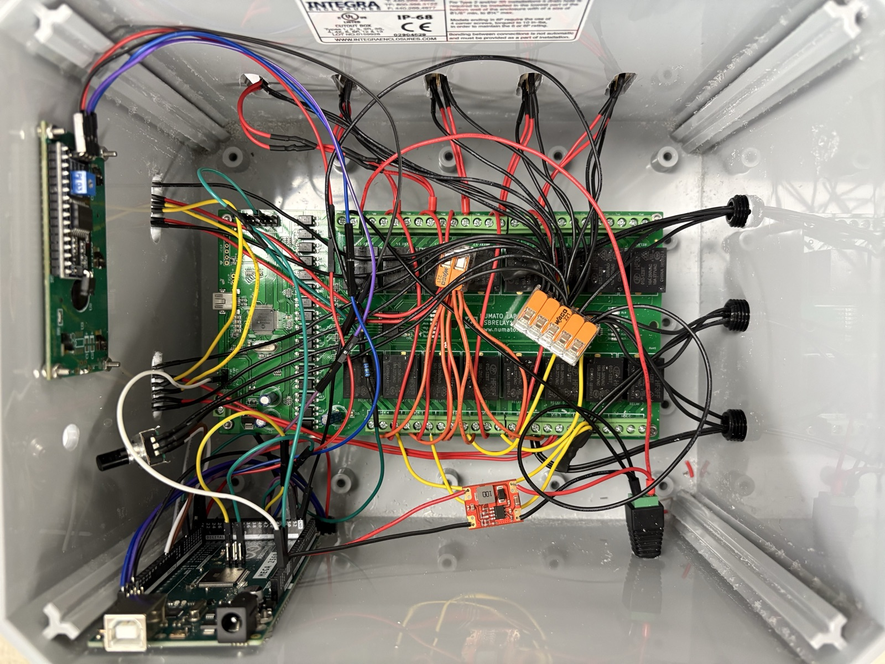

- ~$750KEstimated annual savings
- 0–5Batteries per test, set at runtime
- 400+ hrsContinuous run time
- 0Operator interventions

The problem
Long-term LVAD testing means power cycling the system thousands of times. Before this project, an operator had to step in by hand to keep each test going. An automated fixture had been started to fix this, but it had been stalled since 2023.
Tools: Arduino and C++, relay control, microSD data logging, hardware design, verification testing
What I did
- Technical lead: I led the technical work for a team of four co-ops, taking the fixture from a stalled prototype to a working test system that runs on its own.
- Redesigned the hardware: I added a microSD data-logging system and a rotary encoder with a push-button. With these, operators can configure a test at the fixture itself, which wasn't possible before.
- Rewrote the firmware from scratch: I rebuilt the control software in Arduino C++ with a modular architecture. It adapts to anywhere from 0 to 5 batteries based on what the user enters.
- Built automatic logging: The fixture writes data and debug logs to microSD in a format that opens directly in Excel. Engineers can then plot battery capacity against cycle count.
Result
The fixture now runs power-cycling tests with no operator involvement, saving an estimated $750K per year. Because the architecture is modular, the fixture can take on new test configurations without being redesigned.
Other co-op work
I also calibrated equipment and ran HeartMate 3 LVAD verification tests. I ran outflow graft permeability tests as well, which evaluate how the sealant performs under physiological flow.
Some details are left out to protect Abbott's proprietary and confidential information.